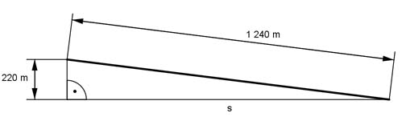

Pythagoras Aufgabe 22 Eine Rutschbahn ist 1 240 m lang und überwindet einen Höhenunterschied von 220 m. Berechnen Sie die horizontale Entfernung s zwischen Start und Ziel und das Gefälle g in Prozent.  1 240² m² = 220² m² + s² | - 220² m² s² = 1 240² m² - 220² mm² = 1 489 200 m² |√ s = = 1 220,3 m 220,3 m g = ----------- = 0,18 --> g = 18 % 1 220,3 m